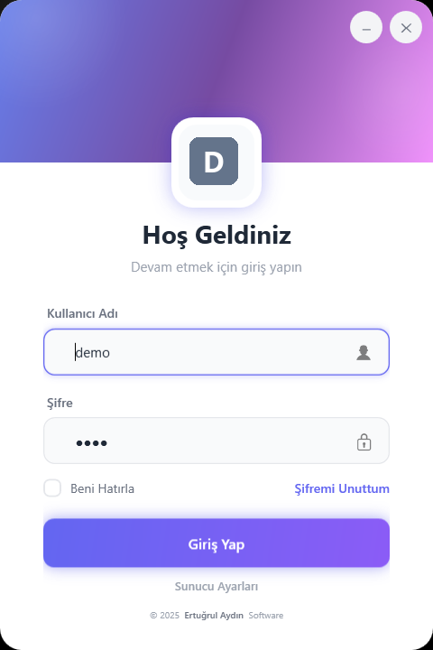
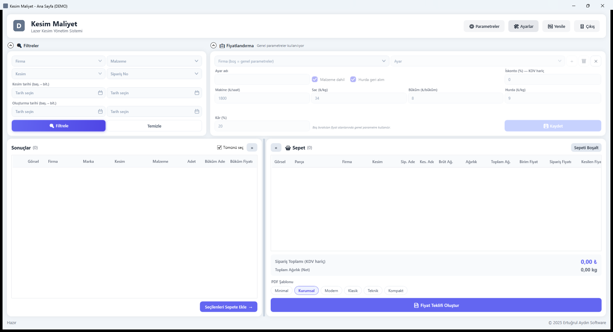
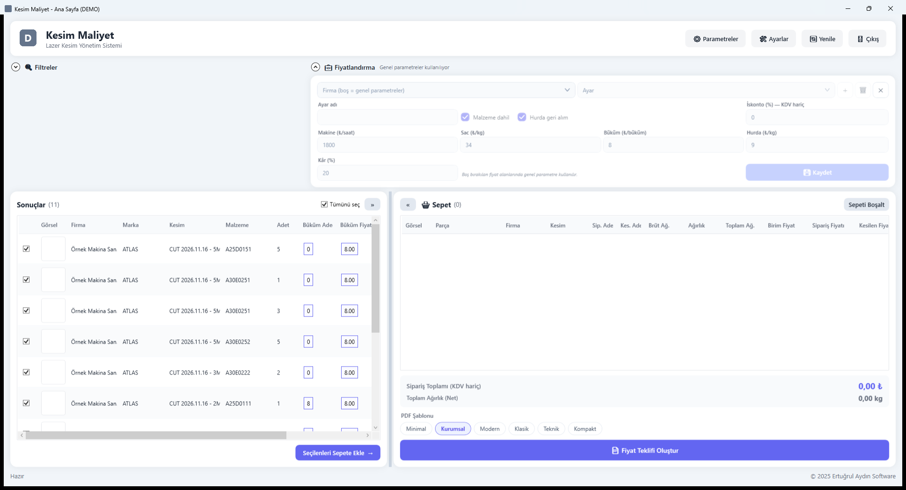
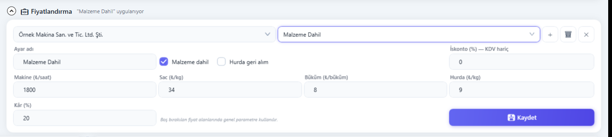
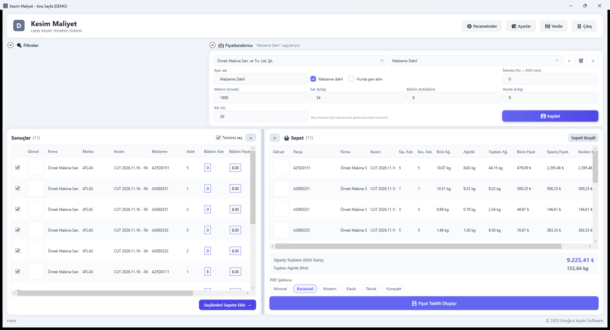
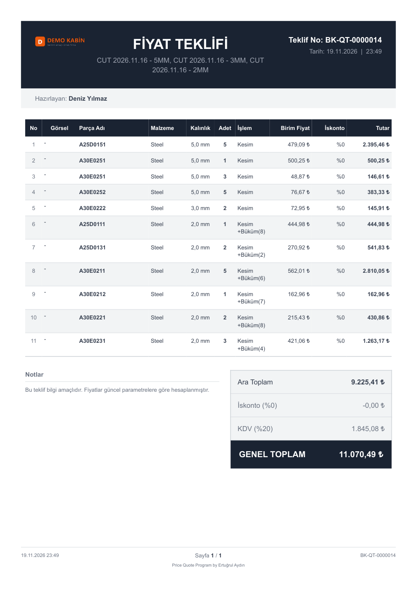
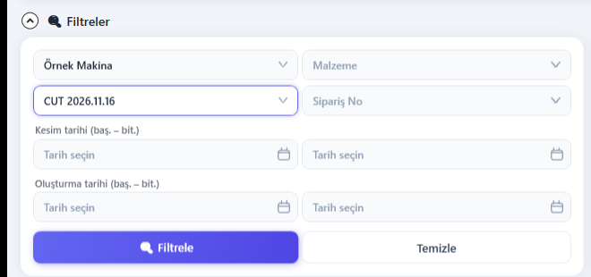
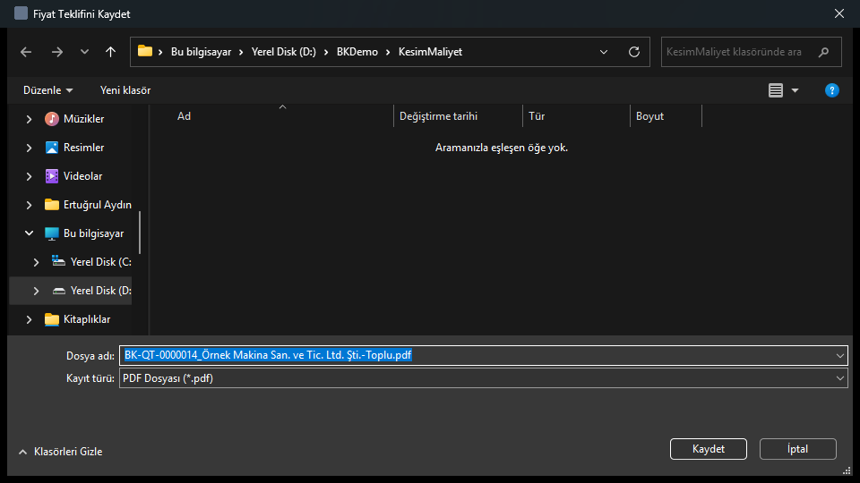
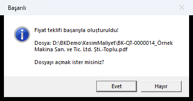

Kesim Maliyet Kullanım Rehberi
Lazer kesimde kesilen parçaların maliyetini hesaplayan ve müşterilere PDF fiyat teklifi hazırlayan uygulama. Rehber iki bölümden oluşur: önce ana sayfa ve pencereler özetlenir, ardından bir demo müşteri için toplu fiyat teklifi adım adım anlatılır. Ekranlardaki bütün veriler uydurmadır: uygulama demo modunda, BK Sipariş rehberiyle aynı yerel test veritabanıyla açılmıştır.
Uygulama ne işe yarar?
Kesim Maliyet, lazerde kesilen parçaların maliyetini hesaplayan ve müşteriye özel fiyat teklifi hazırlayan uygulamadır.
Maliyet hesabıKesilen parçaların maliyetini sac, makine süresi, büküm ve hurda parametreleriyle hesaplama
Müşteriye özel fiyatHer müşteri için ayrı parametrelerle (malzeme dahil/hariç, hurda geri alım, iskonto) fiyat belirleme
PDF fiyat teklifiMüşteriye özel fiyat teklifini modern bir PDF olarak oluşturma
Başlarken
Giriş ve ana pencere

- Kullanıcı adı ve şifrenizle giriş yapın; şifre veritabanında şifrelenmiş olarak kontrol edilir.
- Sunucu Ayarları girişten önce veritabanı bağlantısını ayarlamak içindir (bkz. Ayarlar).
- Şifrenizi unuttuysanız sistem yöneticisine başvurun.
Demo modu: Ekranlar uygulamanın --demo argümanıyla açılan demo modunda alınmıştır. Bu modda uygulama yalnızca yerel BKSiparis_Demo veritabanına bağlanır, internetten döviz kuru çekmez, ayar ve parametre dosyalarını ayrı demo dosyalarına yazar ve teklif PDF’lerinde firma logosu yerine “DEMO KABİN” logosu kullanır. Firmalar, parçalar, fiyatlar ve kur uydurmadır.
1. Bölüm · Genel bakışAna sayfanın bölümleri ve açılan pencereler. Bir kutuya tıklayınca ilgili anlatıma gidersiniz.
Ana sayfa ve pencereler
Ana sayfa › Filtreler, Fiyatlandırma, Sonuçlar, Sepet

Bölümler

Filtreler ve sonuçlarFirma, malzeme, kesim, sipariş ve tarihe göre parça arama

FiyatlandırmaFirmaya özel fiyat ayarları

SepetTeklife girecek parçalar ve toplamlar

Fiyat teklifiAltı şablonla PDF teklif
Pencereler
2. Bölüm · Ayrıntılı kullanımDemo müşteri Örnek Makina San. ve Tic. Ltd. Şti. için 16.11.2026 kesimlerindeki parçalardan toplu fiyat teklifi hazırlama.
Parça arama
Ana sayfa › Filtreler

- Firma, Malzeme, Kesim ve Sipariş No kutularına yazın ya da listeden seçin; yazılan metin değerin herhangi bir yerinde aranır.
- Kesim tarihi ve Oluşturma tarihi aralıklarıyla süzebilirsiniz.
- Filtrele aramayı yapar; hiç filtre yoksa bütün parçaların listelenmesi için onay ister. Temizle filtreleri boşaltır.
- Arama sonrası filtre paneli kendiliğinden daralır; başlığın solundaki ok paneli açar.
- Sonuçlar tablosunda firma, marka, kesim, malzeme kodu, kesilen adet, büküm adedi ve büküm fiyatı görünür.
- Büküm Adedi ve Büküm Fiyatı hücreleri tabloda düzeltilebilir; fiyat hemen yeniden hesaplanır.
- Tümünü seç bütün satırları işaretler ya da kaldırır. » sonuç tablosunu genişletir.
Fiyatlandırma
Ana sayfa › Fiyatlandırma
- Firma seçilmezse Parametreler’deki genel değerler kullanılır; başlığın yanında hangi ayarın uygulandığı yazar.
- Bir firma ve onun kayıtlı Ayar’ını seçince fiyatlar o ayara göre hesaplanır. Bir firmanın birden çok ayarı olabilir (ör. “Malzeme Hariç + Hurda Geri Alımlı”).
- Malzeme dahil işaretli değilse sac bedeli hesaba katılmaz (müşteri sacını kendisi getirir). Hurda geri alım işaretliyse hurda bedeli fiyattan düşülür.
- İskonto (%) KDV hariç tutara uygulanır. Boş bırakılan fiyat alanlarında genel parametre kullanılır.
- ＋ yeni ayar açar, Kaydet ayarı yazar, çöp kutusu siler, ✕ firma seçimini kaldırır.
Sepet
Sonuçlar › Seçilenleri Sepete Ekle
- Sonuçlarda işaretli parçaları Seçilenleri Sepete Ekle ile sepete aktarın. Sepette zaten olan parça ikinci kez eklenmez; farklı aramalardan parça toplayabilirsiniz.
- Sepette her parçanın sipariş ve kesilen adedi, brüt ağırlığı, ağırlığı, toplam ağırlığı, birim fiyatı, sipariş fiyatı ve kesilen fiyatı görünür.
- Fiyatlar sac (kg), makine süresi, büküm, hurda, kâr ve iskontodan hesaplanır; fiyatlandırma ayarı değişince sepet de güncellenir.
- Sepeti Boşalt bütün parçaları çıkarır; « sepeti genişletir.
Fiyat teklifi
Sepet › PDF Şablonu, Fiyat Teklifi Oluştur
- PDF Şablonu seçin: Minimal (sade), Kurumsal (resmi), Modern (renkli), Klasik (serif yazı), Teknik (mühendislik tarzı) ya da Kompakt (çok parçalı teklifler için).
- Fiyat Teklifi Oluştur’a basın. Teklif numarası sıradaki BK-QT numarasıdır; dosya adı numara ve firma adından oluşur.
- Kayıt yerini seçip Kaydet’e basın; teklif oluşunca dosyayı açmak isteyip istemediğiniz sorulur.


Parametreler
Üst çubuk › Parametreler
- Firma ayarı seçilmediğinde bütün fiyatlar bu değerlerle hesaplanır.
- USD/TRY Kur açılışta ve 10 dakikada bir internetten güncellenir (demo modunda kapalıdır; kayıtlı kur kullanılır).
- Fiyat parametreleri veritabanında tutulur, böylece bütün bilgisayarlarda aynıdır; kur bilgisi bilgisayara özeldir.
- Kaydet değerleri yazar; açık sepetteki fiyatlar bir sonraki aramada güncel değerlerle hesaplanır.
Ayarlar
Üst çubuk › Ayarlar (girişte: Sunucu Ayarları)
- Sunucu, Port ve Veritabanı Adı SQL Server bağlantısını belirler. Port boşsa 1433 kullanılır.
- Windows Authentication işaretliyse Windows kimliğiyle bağlanılır; değilse kullanıcı adı ve şifre girilir.
- Bağlantıyı Test Et girilen bilgilerle bağlanmayı dener.
- IP İsimlendirmesi: veritabanından gelen ağ yollarındaki (ör. parça görselleri) sunucu adı bu değerle değiştirilir.
- Ayarlar bu bilgisayara özeldir ve kaydedilince hemen uygulanır.